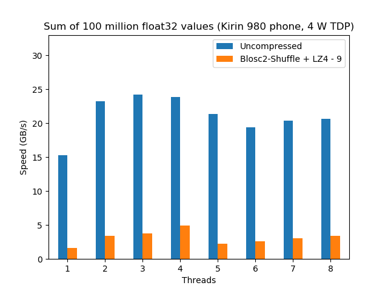

Is ARM Hungry Enough to Eat Intel's Favorite Pie?
Note: This entry is a follow-up of the Breaking Down Memory Walls blog. Please make sure that you have read it if you want to fully understand all the benchmarks performed here.
At the beginning of the 1990s the computing world was mainly using RISC (Reduced Instruction Set Computer) architectures, namely SPARC, Alpha, Power and MIPS CPUs for performing serious calculations and Intel CPUs were seen as something that was appropriate just to run essentially personal applications on PCs, but almost nobody was thinking about them as a serious contender for server environments. But Intel had an argument that almost nobody was ready to recognize how important it could become; with its dominance of the PC market it quickly ranked to be the largest CPU maker in the world and, with such an enormous revenue, Intel played its cards well and, by the beginning of 2000s, they were able to make of its CISC architecture (Complex Instruction Set Computer) the one with the best compute/price ratio, clearly beating the RISC offerings at that time. That amazing achievement shut the mouths of CISC critics (to the point that nowadays almost everybody recognizes that performance has very little to do with using RISC or CISC) and cleared the path for Intel to dominate not only the PC world, but also the world of server computing for the next 20 years.
Fast forward to the beginning of 2010s, with Intel clearly dominating the market of CPUs for servers. However, at the same time something potentially disruptive happened: the market for mobile and embedded systems exploded making the ARM architecture the most widely used architecture in this area. By 2017, with over 100 billion ARM processors produced, ARM was already the most widely used architecture in the world. Now, the smart reader will have noted here a clear parallelism between the situation of Intel at the end of 1990s and ARM at the end of 2010s: both companies were responsible of the design of the most used CPUs in the world. There was an important difference though: while Intel was able to implement its own designs, ARM was leaving the implementation job to third party vendors. Of course, this fact will have consequences on the way ARM will be competing with Intel (see below).
ARM Plans for Improving CPU Performance
So with ARM CPUs dominating the world of mobile and embedded, the question is whether ARM would be interested in having a stab at the client market (laptops and PC desktops) and, by extension, to the server computing market during the 2020s decade or they would renounce to that because they comfortable enough with the current situation? In 2018 ARM provided an important hint to answer this question: they really want to push hard for the client market with the introduction of the Cortex A76 CPU which aspires to redefine the capability of ARM to compete with Intel at its own game:

On the other hand, the fact that ARM is not just providing licenses to use its IP cores, but also the possibility to buy an architectural licence for vendors to design their own CPU cores using the ARM instruction sets makes possible that other players like Apple, AppliedMicro, Broadcom, Cavium (now Marvell), Nvidia, Qualcomm, and Samsung Electronics can produce ARM CPUs that can be adapted to be used in different scenarios. One example that is interesting for this discussion is Marvell who, with its ThunderX2 CPU, is already entering into the computing servers market --actually, a new super-computer with more than 100,000 ThunderX2 cores has recently entered into the TOP500 ranking; this is the first time that an ARM-based computer enters that list, overwhelmingly dominated by Intel architectures for almost two decades now.
In the next sections we are trying to bring more hints (experimentally tested) on whether ARM (and its licensees) are fulfilling their promise, or their claims were just bare marketing. For checking this, I was able to use two recent (2018) implementations of the ARMv8-A architecture, one meant for the client market and the other for servers, replicated the benchmarks of my previous Breaking Down Memory Walls blog entry and extracted some interesting results. Keep reading.
The Kirin 980 CPU
Here we are going to analyze Huawei's Kirin 980 CPU , a SoC (System On a Chip) that uses the ARM A76 core internally. This is a fine example of an internal IP core design of ARM that is licensed to be used in a CPU chipset (or SoC) by another vendor (Huawei in this case). The Kirin 980 wears 4 A76 cores plus 4 A55 cores, but the more powerful ones are the A76 (the A55 are more headed to do light tasks with very little energy consumption, which is critical for phones). The A76 core is designed to be implemented using a 7nm technology (as it is the case for the Kirin 980, the second SoC in the world to use a 7 nm node, after Apple A12), and supports ARM's DynamIQ technology which allows scalability to target the specific requirements of a SoC. In our case the Kirin 980 is running in a phone (Humawei's Mate 20), and in this scenario the power dissipation (TDP) cannot exceed the 4 W figure, so DynamIQ should try to be very conservative here and avoid putting too many cores active at the same time.
ARM is saying that they designed the A76 to be a competitor of the Intel Skylake Core i5, so this is what we are going to check here. For this, we are going to compare a Kirin 980 in a Huawei Mate 20 phone against a Core i5 included in a MacBook Pro (late 2016). Here it is the side-by-side performance for the precipitation dataset that I used in the previous blog:
 |
|

Here we can already see a couple of things. First, the speed of the calculation when there is no compression is similar for both CPUs. This is interesting because, although the bottleneck for this benchmark is in the memory access, the fact that the Kirin 980 performance is almost the same than the Core i5 is a testimony of how well ARM performed in the design of a memory prefetcher, clearly allowing for a good memory-level parallelism.
Second, for the compressed case, the Core i5 is still a 50% faster than the Kirin 980, but the performance scales similarly (up to 4 threads) for both CPUs. The big news here is that the Core i5 has a TDP of 28 W, whereas for the Kirin 980 is just 4 W (and probably less than that), so that means that ARM's DynamIQ works beautifully so as to allow 4 (powerful) cores to run simultaneously in such a restrictive scenario (remember that we are running this benchmark inside a phone). It is also true that we are comparing an Intel CPU from 2016 against an ARM CPU from 2018 and that nowadays probably we can find Intel exemplars showing a similar performance than this i5 for probably no more than 10 W (e.g. an i5-8265U with configurable TDP-down), although I am not really sure how an Intel CPU will perform with such a strict power constraint. At any rate, the Kirin 980 still consumes less than half of the power than its Intel counterpart --and its price would probably be a fraction of it too.
I believe that these facts are really a good testimony of how serious ARM was on their claim that they were going to catch Intel in the performance side of the things for client devices, and probably with an important advantage in consuming less energy too. The fact that ARM CPUs are more energy efficient should not be surprising given the experience of ARM in that area for decades. But another reason for that is the important reduction in the manufacturing technology that ARM has achieved on their new designs (7nm node for ARM vs 14nm node for Intel); undoubtedly, ARM advantage in power consumption is going to be important for their world-domination plans.
The ThunderX2 CPU
The second way in which ARM sells licenses is the so-called architectural license allowing companies to design their own CPU cores using the ARM instruction sets. Cavium (now bought by Marvell) was one of these companies, and they produced different CPU designs that culminated with Vulcan, the micro-architecture that powers the ThunderX2 CPU, which was made available in May 2018. Vulcan is a 16 nm high-performance 64-bit ARM micro-architecture that is specifically meant to compete in compute/data server facilities (think of it as a a Xeon-class ARM-based server microprocessor). ThunderX2 can pack up to 32 Vulcan cores, and as every Vulcan core supports up to 4 threads, the whole CPU can run up to 128 threads. With its capability to handle so many threads simultaneously, I expected that its raw compute power should be nothing to sneeze at.
So as to check how powerful a ThunderX2 can be, we are going to compare ThunderX2 CN9975 (actually a box with 2 instances of it, each containing 28 cores) against one of its natural competitor, the Intel Scalable Gold 5120 (actually a box with 2 instances of it, each containing 14 cores):
|
|


Here we see that, when no compression is used, the Intel instance scales much better and more predictably; however the ThunderX2 is able to reach a similar performance (almost 70 GB/s) than the Intel when enough threads are thrown at the computing task. This is a really interesting fact, because it is showing that, for first time ever, an ARM CPU can match the memory bandwidth of a latest generation Intel CPU (which BTW, was pretty good at that already).
Regarding the compressed scenario, Intel Scalable still performs more than 2x faster than the ThunderX2 and it continues to show a really nice scalability. On the other hand, although the ThunderX2 represents a good step in improving the performance of the ARM architecture, it is still quite far from being able to reach Intel in terms of both raw computing performance and the capacity to scale smoothly.
When we look at power consumption, although I was not able to find the exact figure for the ThunderX2 CN9975 model that has been used in the benchmarks above, it is probably in the range of 150 W per CPU, which is quite larger than its Intel Scalable 5120 counterpart which is around 100 W per CPU. That means that Intel is using quite far less power in their CPU, giving them a clear advantage in server computing at this time.
Final Thoughts
From these results, it is quite evident that ARM is making large strides in catching Intel performance, specially in the client side of the things (laptops, and PC desktops), with an important reduction in power consumption, which is specially important for laptops. Keep these facts in mind when you are going to buy your next laptop or desktop PC and do not blindly assume that Intel is the only reasonable option anymore ;-)
On the server side, Intel still holds an important advantage though, and it will not be easy to take the performance crown away from them. However, the fact that ARM is allowing different vendors to produce their own implementations means that the competition can be more specific and each vendor is free to tackle different aspects of server computing. So it is not difficult to realize that in the next few years we are going to see new ARM exemplars that would be meant not only for crunching numbers, but that will also specialize in different tasks, like storing and serving big data, routing data or performing artificial intelligence, to just mention a few cases (for example, Marvell is trying to position the ThunderX2 more specifically for the data server scenario) that are going to put Intel architectures in difficulties to maintain its current dominance in the data centers.
Finally, we should not forget the fact that software developers (including myself) have been building high performance libraries using exclusively Intel boxes for decades, so making them extremely efficient for Intel architectures. If, as we have seen here, ARM architectures are going to be an alternative in the performance client and server scenarios, then software developers will have to increasingly adopt ARM boxes as part of their tooling so as to continue being competitive in a world that is quite likely it won't necessarily be ruled by Intel anymore.
Acknowledgements
I would like to thank Packet, a provider of bare metal servers in the cloud (among other things) for allowing me not only to use their machines for free, but also helping me in different questions about the configuration of the machines. In particular, Ed Vielmetti has been instrumental in providing me early access to a ThunderX2 server, and making sure that everything was stable enough for the benchmark needs.
Appendix: Software used
For reference, here it is the software that has been used for this blog entry.
For the Kirin 980:
OS: Android 9 - Linux Kernel 4.9.97
Compiler: clang 7.0.0
C-Blosc2: 2.0.0a6.dev (2018-05-18)
For the ThunderX2:
OS: Ubuntu 18.04
Compiler: GCC 7.3.0
C-Blosc2: 2.0.0a6.dev (2018-05-18)
Comments
Comments powered by Disqus